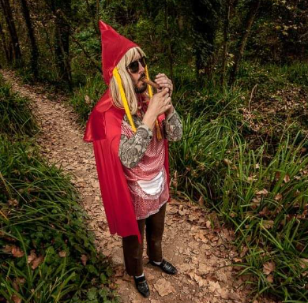
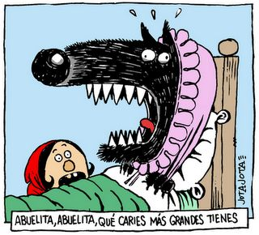
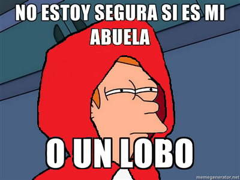
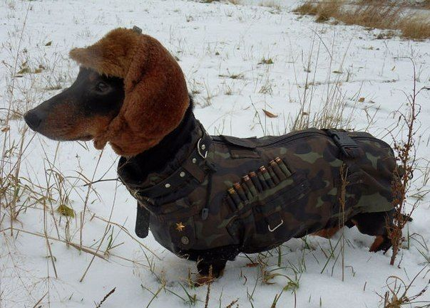

Capitulo1: El Encargo de Mamá

Había una vez en un pequeño pueblo una niña llamada Caperucita Roja. Era conocida por todos por su capa roja brillante que su mamá le había tejido con cariño. Un día, su mamá le pidió un favor especial. Le entregó una cesta llena de deliciosas golosinas y le dijo: "Querida Caperucita, por favor, lleva esta cesta a tu abuelita que vive al otro lado del bosque. Asegúrate de no hablar con extraños y sigue el camino seguro".
Capitulo2: El encuentro en el bosque

Caperucita Roja, emocionada por la tarea, tomó la cesta y se adentró en el frondoso bosque. Mientras caminaba entre los árboles, se encontró con un lobo astuto que se acercó a ella y le preguntó amigablemente a dónde iba. Caperucita, siendo una niña inocente, no sospechó nada y le contó con entusiasmo su destino.
Capítulo 3: El Lobo en el Disfraz

El lobo, viendo una oportunidad para satisfacer su apetito, ideó un plan maestro. Corrió a toda velocidad por un atajo que conocía y llegó a la casa de la abuelita antes que Caperucita. Una vez allí, se disfrazó de la abuelita, metiéndose en su cama y esperando pacientemente.
Capítulo 4: El Engaño de Caperucita

Cuando Caperucita Roja llegó finalmente a la casa de la abuelita, notó algo extraño en el comportamiento y apariencia de su querida abuelita. Preguntó por qué tenía grandes orejas, ojos y dientes, y el lobo trató de disimular, diciendo que era por un resfriado que había cogido.
Capítulo 5: El Gran Descubrimiento
Sin embargo, la intuición de Caperucita Roja la alertó de que algo no estaba bien. Miró de cerca al lobo y finalmente descubrió su verdadera identidad al ver sus enormes ojos, orejas y dientes afilados. Llena de miedo, gritó y salió corriendo de la casa, escapando del lobo disfrazado.
Capítulo 6: El Rescate del Cazador

Afortunadamente, un valiente cazador que pasaba por el bosque escuchó los gritos de Caperucita Roja y se apresuró hacia la casa de la abuelita. Allí, descubrió al lobo en el disfraz y lo atrapó antes de que pudiera hacer daño a nadie más. Caperucita y su abuelita estaban a salvo gracias al valiente cazador.